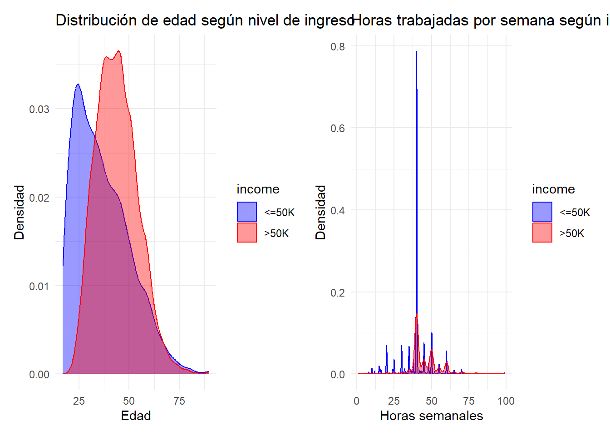
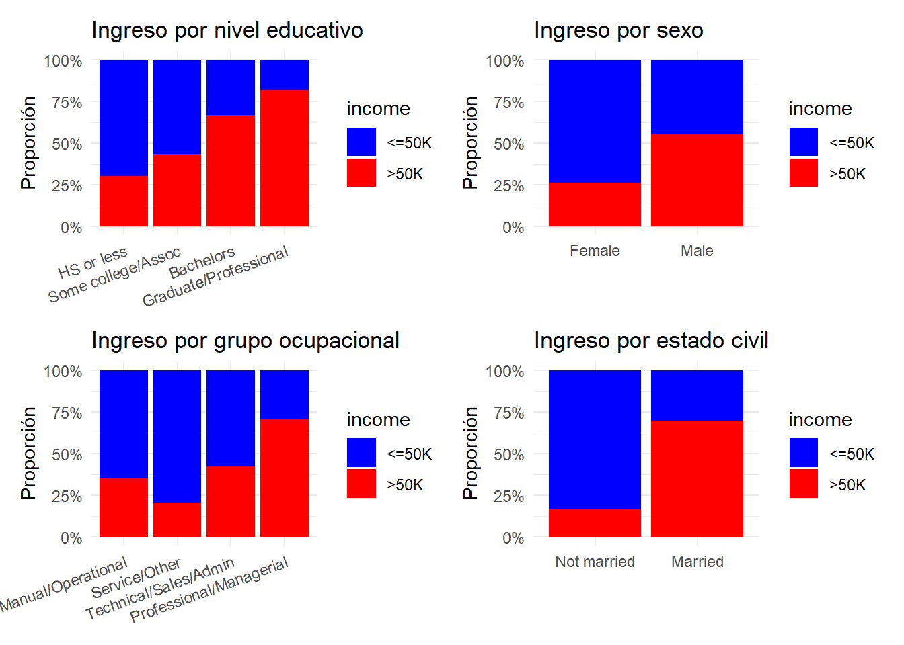
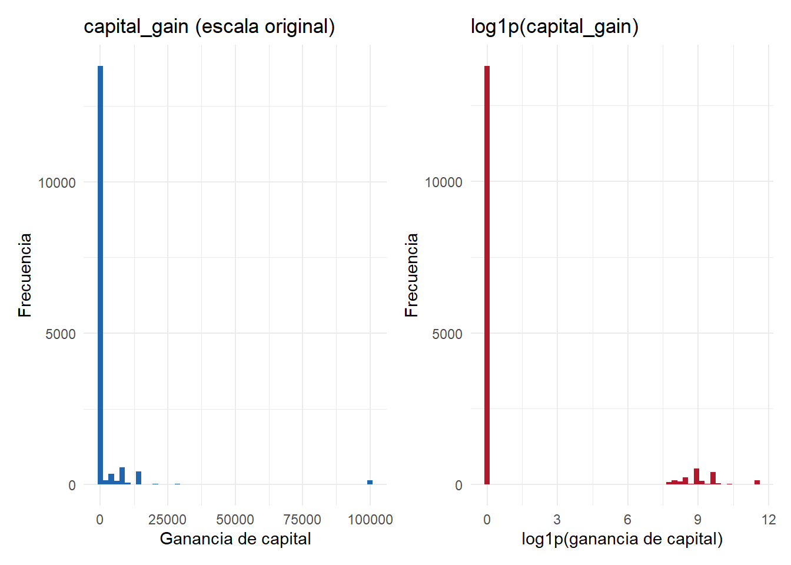
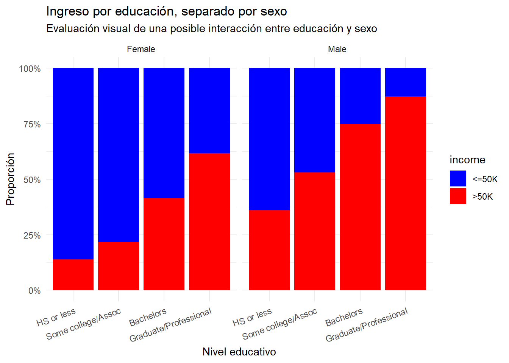
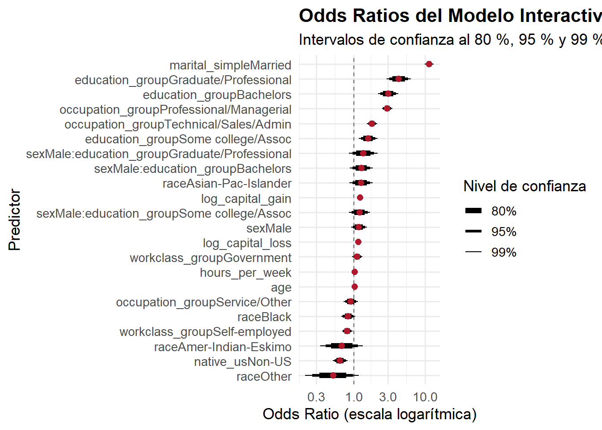

El presente trabajo busca aplicar regresión logística binomial para modelar la probabilidad dada d que un individuo perciba ingresos anuales superiores a los 50000 dólares (>50K), sobre la base de una serie de predictores sociodemográficos y laborales del Adult Census Income de los Estados Unidos.
Se pretende un alcance de tipo descriptivo-explicativo ya que el interés no recae en predecir sobre datos nuevos; sino en caracterizar qué factores parecieran determinar la pertenencia al estrato de altos ingresos. Por eso no se desarrolla un esquema/modelo train-test,
# "Regresión logística sobre ingresos altos - Adult Census USA"# Por: "Mariano Ripoll Vast"## Librerías necesariasif (!require("pacman")) install.packages("pacman")
Loading required package: pacman
Warning: package 'pacman' was built under R version 4.4.3
# Mediante pacman, todas las librerías requeridas para la sesión.pacman::p_load( tidyverse, here, janitor, broom, marginaleffects, modelsummary, kableExtra, scales, patchwork, forcats )#Paleta de colores coherente para todo el documento:# azul para ingresos bajos (<=50K) y rojo para ingresos altos (>50K).paleta_income <-c("<=50K"="blue", ">50K"="red")
# 1. Preparación, carga y limpieza de datos# Carga de datos# Se cargan datos crudos mediante ruta relativa con here(),adult_raw <-read_csv(here("TP3", "data", "adult_census_USA.csv"))
Rows: 15766 Columns: 14
── Column specification ────────────────────────────────────────────────────────
Delimiter: ","
chr (9): workclass, education, marital_status, occupation, relationship, rac...
dbl (5): age, education_num, capital_gain, capital_loss, hours_per_week
ℹ Use `spec()` to retrieve the full column specification for this data.
ℹ Specify the column types or set `show_col_types = FALSE` to quiet this message.
# Se estandarizan los nombres de las columnas a formato snake_case,adult_raw <- adult_raw |>clean_names()# transforma income en factor con los niveles ordenados de forma explícita:# "<=50K" se fija como categoría de referencia (primer nivel) y ">50K" como la clase# a predecir (segundo nivel). Además binariza (0/1).adult <- adult_raw |>mutate(income =factor(income, levels =c("<=50K", ">50K")),income_high =if_else(income ==">50K", 1, 0) )# Verificación del balance# variable objetivo calculando x frecuencias y proporciones.adult |>count(income) |>mutate(prop = n /sum(n)) |> knitr::kable(digits =3,col.names =c("Ingreso", "N", "Proporción"),caption ="Distribución de la variable objetivo" ) |>kable_styling(bootstrap_options =c("striped", "hover", "condensed"),full_width =FALSE )
Distribución de la variable objetivo
Ingreso
N
Proporción
<=50K
8258
0.524
>50K
7508
0.476
kLa variable objetivo se encuentra relativamente bien balanceada: aproximadamente el 52 % de las observaciones corresponde a ingresos bajos (<=50K) y el 48 % a ingresos altos (>50K). Al no existir una asimetría extrema entre clases, no parece menester que se aplican procedimientos de remuestreo y el análisis puede concentrarse en la interpretación del modelo.
# "Recodificación" de predictores#construte el dataset analítico recodificando y simplificando aquellas variables# con demasiadas categorías, de modo que cada predictor resulte interpretable.adult_model <- adult |>mutate(# Se colapsa el estado civil en dos categorías. Los vínculos conyugales vigentes# ("Married-civ-spouse" y "Married-AF-spouse") se agrupan como "Married".marital_simple =case_when( marital_status %in%c("Married-civ-spouse", "Married-AF-spouse") ~"Married",TRUE~"Not married" ),# Se agrupan los 16 niveles educativos en cuatro tramos ordenados de credencil.education_group =case_when( education %in%c("Preschool", "1st-4th", "5th-6th", "7th-8th","9th", "10th", "11th", "12th", "HS-grad") ~"HS or less", education %in%c("Some-college", "Assoc-acdm", "Assoc-voc") ~"Some college/Assoc", education =="Bachelors"~"Bachelors", education %in%c("Masters", "Doctorate", "Prof-school") ~"Graduate/Professional" ),# Se reducen las 14 ocupaciones a cuatro grandes segmentos del mercado laboral.occupation_group =case_when( occupation %in%c("Exec-managerial", "Prof-specialty") ~"Professional/Managerial", occupation %in%c("Tech-support", "Sales", "Adm-clerical") ~"Technical/Sales/Admin", occupation %in%c("Craft-repair", "Machine-op-inspct", "Transport-moving","Handlers-cleaners", "Farming-fishing") ~"Manual/Operational",TRUE~"Service/Other" ),# Se simplifica la clase de trabajador en tres sectores estables.workclass_group =case_when( workclass =="Private"~"Private", workclass %in%c("Federal-gov", "State-gov", "Local-gov") ~"Government", workclass %in%c("Self-emp-not-inc", "Self-emp-inc") ~"Self-employed",TRUE~"Other" ),# Se genera una variable binaria de origen nacional (nativo de EE. UU. vs resto).native_us =if_else(native_country =="United-States", "US", "Non-US"),# Se aplican transformaciones log1p() a las rentas de capital, dada su fuerte# asimetría y su alta concentración en cero.log_capital_gain =log1p(capital_gain),log_capital_loss =log1p(capital_loss) ) |># Se descartan los escasos casos "Without-pay" (4 observaciones) que, por su baja# frecuencia, producirían estimaciones inestables en el sector laboral.filter(workclass_group !="Other")
# Categorías de referencia;#Codigo fija de forma explícita las categorías de referencia para cada predictor categórico,# elegidas según la narrativa del trabajo. El perfil de referencia es una persona:# mujer, no casada, con secundaria o menos, empleada en el sector privado, en ocupación# manual, nativa de EE. UU. y de raza blanca. Cada coeficiente se lee como desvío de ese perfil.adult_model <- adult_model |>mutate(sex =factor(sex, levels =c("Female", "Male")),marital_simple =factor(marital_simple, levels =c("Not married", "Married")),education_group =factor( education_group,levels =c("HS or less", "Some college/Assoc", "Bachelors", "Graduate/Professional") ),workclass_group =factor( workclass_group,levels =c("Private", "Government", "Self-employed") ),occupation_group =factor( occupation_group,levels =c("Manual/Operational", "Service/Other","Technical/Sales/Admin", "Professional/Managerial") ),native_us =factor(native_us, levels =c("US", "Non-US")),race =fct_relevel(factor(race), "White") )
# Dataset analítico final# Se seleccionan las variables finales del modelo y se eliminan filas con datos faltantes.adult_model <- adult_model |>select( income, income_high, age, sex, marital_simple, education_group, workclass_group, occupation_group, hours_per_week, log_capital_gain, log_capital_loss, native_us, race ) |>drop_na()# Se inspecciona la estructura del dataset analítico resultante.glimpse(adult_model)
Justificación de la selección: piensese que el modelo combina tres dimensiones. Educación y ocupación capturan diferencias de calificación y segmentación laboral (capital humano e inserción laboral). Hras semanales y rentas de capital aproximan la intensidad del trabajo y las fuentes complementarias de ingreso. Sexo, estado civil, raza y origen permitirían controlar desigualdades sociodemográficas estructurales.
NOTESE QUÉ: Se excluyen education_num por ser redundante con education_group, y relationship por su fuerte colinealidad con sexo y estado civil.
# 1. Análisis exploratorio/Distribuciones bivariadas #Comparan las distribuciones de las variables continuas segun el nivel de ingresop_age <- adult_model |>ggplot(aes(x = age, fill = income, color = income)) +geom_density(alpha =0.4) +scale_fill_manual(values = paleta_income) +scale_color_manual(values = paleta_income) +labs(title ="Distribución de edad según nivel de ingreso",x ="Edad", y ="Densidad" ) +theme_minimal()p_hours <- adult_model |>ggplot(aes(x = hours_per_week, fill = income, color = income)) +geom_density(alpha =0.4) +scale_fill_manual(values = paleta_income) +scale_color_manual(values = paleta_income) +labs(title ="Horas trabajadas por semana según ingreso",x ="Horas semanales", y ="Densidad" ) +theme_minimal()p_age | p_hours

#Representa, mediante barras apiladas al 100 %, proporcion de cada categorua# que pertenece a cada nivel de ingreso.p_edu <- adult_model |>ggplot(aes(x = education_group, fill = income)) +geom_bar(position ="fill") +scale_fill_manual(values = paleta_income) +scale_y_continuous(labels =label_percent()) +labs(title ="Ingreso por nivel educativo", x =NULL, y ="Proporción") +theme_minimal() +theme(axis.text.x =element_text(angle =20, hjust =1))p_sex <- adult_model |>ggplot(aes(x = sex, fill = income)) +geom_bar(position ="fill") +scale_fill_manual(values = paleta_income) +scale_y_continuous(labels =label_percent()) +labs(title ="Ingreso por sexo", x =NULL, y ="Proporción") +theme_minimal()p_occ <- adult_model |>ggplot(aes(x = occupation_group, fill = income)) +geom_bar(position ="fill") +scale_fill_manual(values = paleta_income) +scale_y_continuous(labels =label_percent()) +labs(title ="Ingreso por grupo ocupacional", x =NULL, y ="Proporción") +theme_minimal() +theme(axis.text.x =element_text(angle =20, hjust =1))p_marital <- adult_model |>ggplot(aes(x = marital_simple, fill = income)) +geom_bar(position ="fill") +scale_fill_manual(values = paleta_income) +scale_y_continuous(labels =label_percent()) +labs(title ="Ingreso por estado civil", x =NULL, y ="Proporción") +theme_minimal()# Se combinan los cuatro gráficos categóricos con patchwork.(p_edu | p_sex) / (p_occ | p_marital)

Sovbre las distribuciones dadas:
La pertenencia al estrato de altos ingresos no depende de un único factor. La educación muestra una asociación fuerte y monotónica con la probabilidad de superar los 50.000 dólares.
El sexo evidencia una brecha visible a favor de los varones. Las horas semanales se desplazan hacia valores más altos entre quienes tienen ingresos altos. La ocupación profesional/gerencial y el estado civ “casado” se asocian a mayores proporciones de altos ingresos.
Variables de capital, en cambio, presentan una concentración extrema en cero, dando pie a justidicar tratamiento mediante log1p().
#Transformación e interacción# Se transforman `capital_gain` y `capital_loss` mediante `log1p()` porque tiemen una distribución muy asimétrica, con gran masa de valores en cero (aprox 88% y 94%, respectivamente) y pocos valores extremadamente altos. La transformación `log1p(x) = log(x + 1)` comprime la cola derecha; reduciendo la influencia de valores extremos sin descartar las observaciones con valor cero(al evitar la discontinuidad de `log(0).#Contrasta la distribución de capital_gain en su escala original frente a la# transformada con log1p(), para visualizar el efecto sobre la asimetría.p_cg_raw <- adult |>ggplot(aes(x = capital_gain)) +geom_histogram(bins =50, fill ="#2166AC") +labs(title ="capital_gain (escala original)",x ="Ganancia de capital", y ="Frecuencia") +theme_minimal()p_cg_log <- adult |>ggplot(aes(x =log1p(capital_gain))) +geom_histogram(bins =50, fill ="#B2182B") +labs(title ="log1p(capital_gain)",x ="log1p(ganancia de capital)", y ="Frecuencia") +theme_minimal()p_cg_raw | p_cg_log

# Ealúa visualmente la interacción educación x sexo: grafica la proporción de# altos ingresos por nivel educativo, separando los paneles según sexo.adult_model |>ggplot(aes(x = education_group, fill = income)) +geom_bar(position ="fill") +facet_wrap(~ sex) +scale_fill_manual(values = paleta_income) +scale_y_continuous(labels =label_percent()) +labs(title ="Ingreso por educación, separado por sexo",subtitle ="Evaluación visual de una posible interacción entre educación y sexo",x ="Nivel educativo", y ="Proporción" ) +theme_minimal() +theme(axis.text.x =element_text(angle =20, hjust =1))

Justificación teórica de la interaccion: # La interacción entre educación y sexo permite evaluar si el rendimiento económico de la educación es homogéneo entre varones y mujeres Teóricamente esto es relevante porque el mercado laboral puede premiar las credenciales educativas de manera desigual según el género, por la: segmentación ocupacional, diferencias en las trayectorias laborales, la discriminación o a la composición sectorial del empleo. Por ello, el modelo interactivo no pregunta únicamente si la educación aumenta la probabilidad de ingresos altos, sino que sebusca ver si ese aumento esta con la misma intensidad para varones y mujeres. El gráfico permite anticipar si las pendientes por nivel educativo difieren entre paneles.
# 2. Ajuste de modelos (regresión logística)# A continuación se estiman dos modelos con `glm(family = binomial)`. Las categorías de referencia fijadas (sexo Female, estado civil Not married, educación HS or less, sector Private, ocupación Manual/Operational, origen US y raza White) definen el perfil contra el cual se interpreta cada coeficiente.# Modelo 1 (Base): regresión logística estándar, sin términos de interacción.modelo_base <-glm( income ~ age + sex + marital_simple + education_group + workclass_group + occupation_group + hours_per_week + log_capital_gain + log_capital_loss + native_us + race,family = binomial,data = adult_model)# Modelo 2 (Interactivo): conserva los mismos predictores y añade la interacción# sexo x educación. La notación sex * education_group incluye automáticamente ambos# efectos principales y todos sus términos de interacción.modelo_interactivo <-glm( income ~ age + sex * education_group + marital_simple + workclass_group + occupation_group + hours_per_week + log_capital_gain + log_capital_loss + native_us + race,family = binomial,data = adult_model)summary(modelo_base)
# tabla comparativa de coeficientes con formato de publicación.modelsummary(list("Modelo 1: Base"= modelo_base,"Modelo 2: Interactivo"= modelo_interactivo ),exponentiate =FALSE, # Coeficientes en log-oddsstatistic ="({std.error})", # Error estándar entre paréntesisstars =TRUE# Marcas de significatividad)
Profiled confidence intervals may take longer time to compute.
Use `ci_method="wald"` for faster computation of CIs.
Profiled confidence intervals may take longer time to compute.
Use `ci_method="wald"` for faster computation of CIs.
Modelo 1: Base
Modelo 2: Interactivo
+ p < 0.1, * p < 0.05, ** p < 0.01, *** p < 0.001
(Intercept)
-5.929***
-5.792***
(0.146)
(0.160)
age
0.031***
0.031***
(0.002)
(0.002)
sexMale
0.329***
0.166+
(0.059)
(0.099)
marital_simpleMarried
2.433***
2.432***
(0.054)
(0.054)
education_groupSome college/Assoc
0.618***
0.464***
(0.054)
(0.117)
education_groupBachelors
1.301***
1.111***
(0.068)
(0.128)
education_groupGraduate/Professional
1.679***
1.449***
(0.091)
(0.153)
workclass_groupGovernment
0.105+
0.113+
(0.064)
(0.064)
workclass_groupSelf-employed
-0.209**
-0.209**
(0.065)
(0.065)
occupation_groupService/Other
-0.070
-0.094
(0.089)
(0.090)
occupation_groupTechnical/Sales/Admin
0.611***
0.590***
(0.061)
(0.062)
occupation_groupProfessional/Managerial
1.090***
1.080***
(0.066)
(0.066)
hours_per_week
0.034***
0.034***
(0.002)
(0.002)
log_capital_gain
0.208***
0.208***
(0.009)
(0.009)
log_capital_loss
0.153***
0.153***
(0.013)
(0.013)
native_usNon-US
-0.434***
-0.436***
(0.091)
(0.091)
raceAmer-Indian-Eskimo
-0.387
-0.380
(0.266)
(0.266)
raceAsian-Pac-Islander
0.241+
0.238+
(0.144)
(0.144)
raceBlack
-0.178*
-0.179*
(0.087)
(0.087)
raceOther
-0.669*
-0.663*
(0.333)
(0.333)
sexMale × education_groupSome college/Assoc
0.190
(0.131)
sexMale × education_groupBachelors
0.244+
(0.144)
sexMale × education_groupGraduate/Professional
0.311+
(0.178)
Num.Obs.
15762
15762
AIC
13147.4
13148.8
BIC
13300.7
13325.1
Log.Lik.
-6553.687
-6551.411
RMSE
0.37
0.37
El Modelo 1 estima las asociaciones promedio entre los predictores y la probabilidad de pertenecer al grupo de altos ingresos, asumiendo que el efecto de la educación es idéntico para ambos sexos. El Modelo 2conserva la misma estructura, pero permite que el efecto de la educación varíe según el sexo. La comparación entre ambos permite evaluar si la interacción agrega información sustantiva y estadísticamente relevante.
#3:# Calculé los Efectos Marginales Promedio (AME) del modelo interactivo. Un AME# expresa el cambio promedio en la probabilidad de pertenecer a ">50K" ante un cambio# unitario del predictor (piensese como: el contraste respecto de la categoría de referencia).ame_modelo2 <-avg_slopes(modelo_interactivo)# Construye la tabla en puntos porcentualestabla_ame <- ame_modelo2 |>as_tibble() |>mutate(estimate_pct = estimate *100,conf_low_pct = conf.low *100,conf_high_pct = conf.high *100 ) |>select(term, contrast, estimate_pct, conf_low_pct, conf_high_pct, p.value)# Se identifican las filas estadísticamente significativas para resaltarlas en la tabla.filas_sig <-which(tabla_ame$p.value <0.05)tabla_ame |> knitr::kable(digits =3,col.names =c("Predictor", "Contraste", "AME (p.p.)","IC inf. (p.p.)", "IC sup. (p.p.)", "Valor p"),caption ="Efectos Marginales Promedio del Modelo Interactivo (en puntos porcentuales)" ) |>kable_styling(bootstrap_options =c("striped", "hover", "condensed", "responsive"),full_width =FALSE ) |>row_spec(filas_sig, bold =TRUE, color ="black", background ="#e6f2ff")
Efectos Marginales Promedio del Modelo Interactivo (en puntos porcentuales)
Predictor
Contraste
AME (p.p.)
IC inf. (p.p.)
IC sup. (p.p.)
Valor p
age
dY/dX
0.410
0.361
0.460
0.000
education_group
Bachelors - HS or less
18.663
16.779
20.548
0.000
education_group
Graduate/Professional - HS or less
23.780
21.334
26.226
0.000
education_group
Some college/Assoc - HS or less
8.990
7.437
10.543
0.000
hours_per_week
dY/dX
0.454
0.399
0.509
0.000
log_capital_gain
dY/dX
2.777
2.559
2.995
0.000
log_capital_loss
dY/dX
2.052
1.718
2.386
0.000
marital_simple
Married - Not married
38.599
37.072
40.125
0.000
native_us
Non-US - US
-5.831
-8.200
-3.462
0.000
occupation_group
Professional/Managerial - Manual/Operational
15.166
13.334
16.998
0.000
occupation_group
Service/Other - Manual/Operational
-1.325
-3.807
1.157
0.295
occupation_group
Technical/Sales/Admin - Manual/Operational
8.358
6.636
10.080
0.000
race
Amer-Indian-Eskimo - White
-5.094
-12.041
1.854
0.151
race
Asian-Pac-Islander - White
3.192
-0.597
6.980
0.099
race
Black - White
-2.410
-4.693
-0.127
0.039
race
Other - White
-8.840
-17.420
-0.259
0.043
sex
Male - Female
4.164
2.516
5.811
0.000
workclass_group
Government - Private
1.501
-0.166
3.168
0.078
workclass_group
Self-employed - Private
-2.781
-4.471
-1.091
0.001
# Graficar de Odds Ratios# Calcula Odds Ratios a tres niveles de confianza. tidy(exponentiate = TRUE)or_80 <-tidy(modelo_interactivo, exponentiate =TRUE, conf.int =TRUE, conf.level =0.80) |>mutate(conf_level ="80%")or_95 <-tidy(modelo_interactivo, exponentiate =TRUE, conf.int =TRUE, conf.level =0.95) |>mutate(conf_level ="95%")or_99 <-tidy(modelo_interactivo, exponentiate =TRUE, conf.int =TRUE, conf.level =0.99) |>mutate(conf_level ="99%")# Se apilan los tres niveles. El 99 % se ubica primero para que quede dibujado por debajo# y las barras más anchas (80 %) queden encima, produciendo el efecto graduado de grosor.or_plot <-bind_rows(or_99, or_95, or_80) |>filter(term !="(Intercept)") |>mutate(conf_level =factor(conf_level, levels =c("80%", "95%", "99%")))# Se grafica el bosque de Odds Ratios en escala logarítmica, con grosor de barra# decreciente según el nivel de confianza.ggplot(or_plot, aes(x = estimate, y =fct_reorder(term, estimate))) +geom_vline(xintercept =1, linetype ="dashed", color ="gray40") +geom_errorbarh(aes(xmin = conf.low, xmax = conf.high, linewidth = conf_level),height =0 ) +geom_point(size =2.2, color ="#B2182B") +scale_linewidth_manual(values =c("80%"=2.2, "95%"=1.2, "99%"=0.5),name ="Nivel de confianza" ) +scale_x_log10() +labs(title ="Odds Ratios del Modelo Interactivo",subtitle ="Intervalos de confianza al 80 %, 95 % y 99 % (grosor decreciente)",x ="Odds Ratio (escala logarítmica)",y ="Predictor" ) +theme_minimal(base_size =13) +theme(plot.title =element_text(face ="bold"))

En los Odds Ratio, un valor mayor a 1 indica un aumento de las chances de pertenecer al grupo >50K, mientras que un valor menor a 1 indica una reducción, respecto de la categoría de referencia o ante un aumento unitario del predictor.
La escala logarítmica del eje hace que duplicar las chances (OR = 2) quede visualmente a la misma distancia que reducirlas a la mitad (OR = 0,5). En los AMEel coeficiente se interpreta directamente como cambio promedio en la probabilidad; multiplicado por 100.
Interpretación”: La educación es el predictor más potente; alcanzar el nivel Graduate/Professional multiplica varias veces las chances de superar los 50.000 dólares y eleva la probabilidad en una magnitud considerable respecto de “secundaria o menos”.
Estar casado, trabajar más horas y desempeñar ocupaciones profesionales/gerenciales también incrementa de forma significativa tal probabilidad.
Respecto de la interacción, los términos sexMale:education_group... indica en qué medida el retorno educativo difiere entre varones y mujeres: si resultan significativos y se ubican por encima de 1, el premio de cada credencial educativa es mayor para los varones que para las mujeres, lo que confirma que el efecto de la educación no es homogéneo entre sexos.
# 4. Comparación modelos# a partir de las deviances como 1 - (deviance residual / deviance nula).comparacion_modelos <-bind_rows(glance(modelo_base) |>mutate(Modelo ="Modelo 1: Base"),glance(modelo_interactivo) |>mutate(Modelo ="Modelo 2: Interactivo")) |>mutate(pseudo_r2 =1- (deviance / null.deviance) ) |>select(Modelo, null.deviance, deviance, pseudo_r2, AIC, BIC, nobs)comparacion_modelos |> knitr::kable(digits =3,col.names =c("Modelo", "Deviance nula", "Deviance residual","Pseudo-R² (McFadden)", "AIC", "BIC", "N"),caption ="Comparación global de modelos logísticos" ) |>kable_styling(bootstrap_options =c("striped", "hover", "condensed", "responsive"),full_width =FALSE ) |># Se resalta automáticamente la fila del modelo con menor AIC.row_spec(which.min(comparacion_modelos$AIC), bold =TRUE, background ="lightblue")
Comparación global de modelos logísticos
Modelo
Deviance nula
Deviance residual
Pseudo-R² (McFadden)
AIC
BIC
N
Modelo 1: Base
21815.45
13107.38
0.399
13147.38
13300.68
15762
Modelo 2: Interactivo
21815.45
13102.82
0.399
13148.82
13325.13
15762
# Se contrasta formalmente si la interacción aporta, comparando el modelo base# (anidado) contra el interactivo mediante un test de razón de verosimilitud.anova(modelo_base, modelo_interactivo, test ="LRT")
Analysis of Deviance Table
Model 1: income ~ age + sex + marital_simple + education_group + workclass_group +
occupation_group + hours_per_week + log_capital_gain + log_capital_loss +
native_us + race
Model 2: income ~ age + sex * education_group + marital_simple + workclass_group +
occupation_group + hours_per_week + log_capital_gain + log_capital_loss +
native_us + race
Resid. Df Resid. Dev Df Deviance Pr(>Chi)
1 15742 13107
2 15739 13103 3 4.5523 0.2077
La inclusión de la interacción no mejora** el modelo. Si bien el Modelo 2 reduce levemente la deviance residual (de 13107,4 a 13102,8), esa caída de apenas 4,56 puntos se obtiene a costa de tres parámetros adicionales y no resulta estadísticamente significativa (test de razón de verosimilitud: Δdeviance es aproc 4,56 con 3 g.l., p valor de aproximadamente 0,21). En consecuencia, el pseudo-R² de McFadden permanece prácticamente idéntico (0,399 en ambos modelos), el AIC es incluso algo menor en el Modelo 1 (13147,4 vs 13148,8) y el BIC —que penaliza con mayor fuerza la complejidad— favorece de forma clara al modelo base (13300,7 frente a 13325,1). Por lo tanto, aunque el análisis exploratorio sugería una posible interacción entre educación y sexo, esta no aporta información sustantiva una vez controlados el resto de los predictores; debería de preferirse el modelo 1.
El análisis confirma que la pertenencia al estrato de altos ingresos en los Estados Unidos responde a una combinación de capital humano, inserción laboral y posición sociodemográfica, antes que a un único factor. La educación emerge como el determinante más fuerte, con un retorno creciente y monotónico a lo largo de los niveles de credencial. La intensidad laboral (horas semanales), las ocupaciones profesionales/gerenciales y las rentas de capital operan en el mismo sentido, mientras que el estado civil “casado” se asocia de manera robusta a mayores ingresos. Persisten, además, brechas sociodemográficas relevantes: el sexo masculino y el origen nativo se vinculan a mayores probabilidades de altos ingresos, aun controlando por educación y ocupación.
Respecto de la interacción educación × sexo, el análisis exploratorio había sugerido que el retorno de las credenciales podía diferir entre varones y mujeres. Sin embargo, al incorporarla en el Modelo 2, dicha interacción no resultó estadísticamente significativa ni mejoró el ajuste global: el AIC y el BIC favorecieron al modelo base y el pseudo-R² de McFadden permaneció inalterado. En consecuencia, una vez controlado el resto de los predictores, el premio educativo puede considerarse relativamente homogéneo entre sexos. En conjunto, se prefiere el Modelo 1 ( por parsimonia: la estructura de la desigualdad de ingresos queda caracterizada por el peso dominante de la educación y la ocupación, junto con brechas sociodemográficas persistentes de género y origen, sin que la interacción aporte poder explicativo adicional.